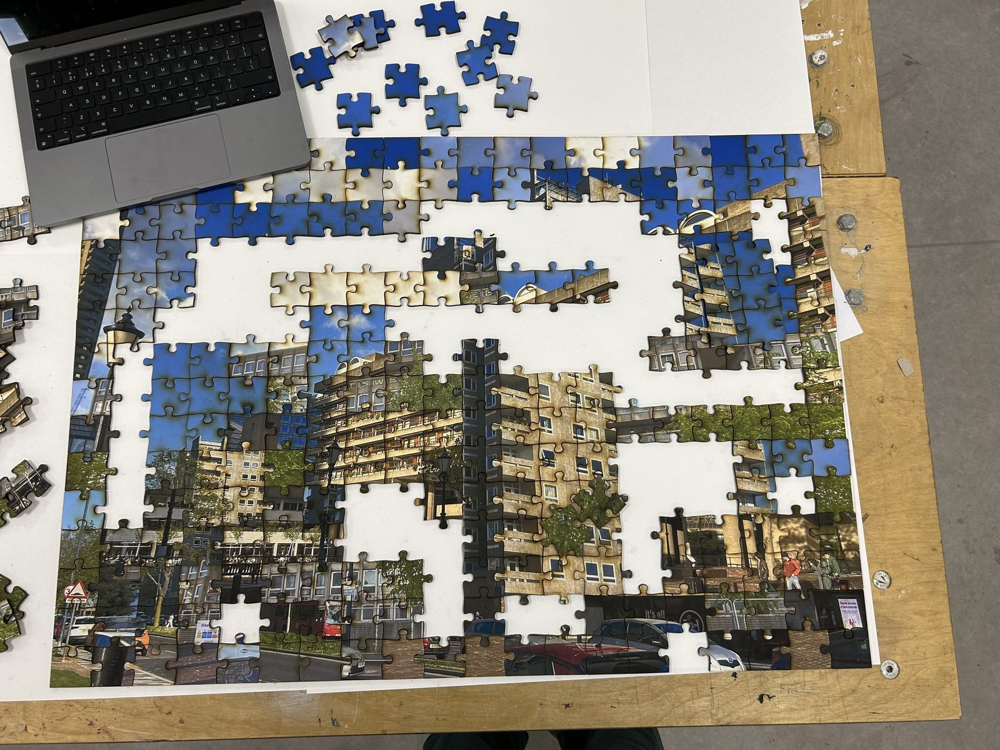
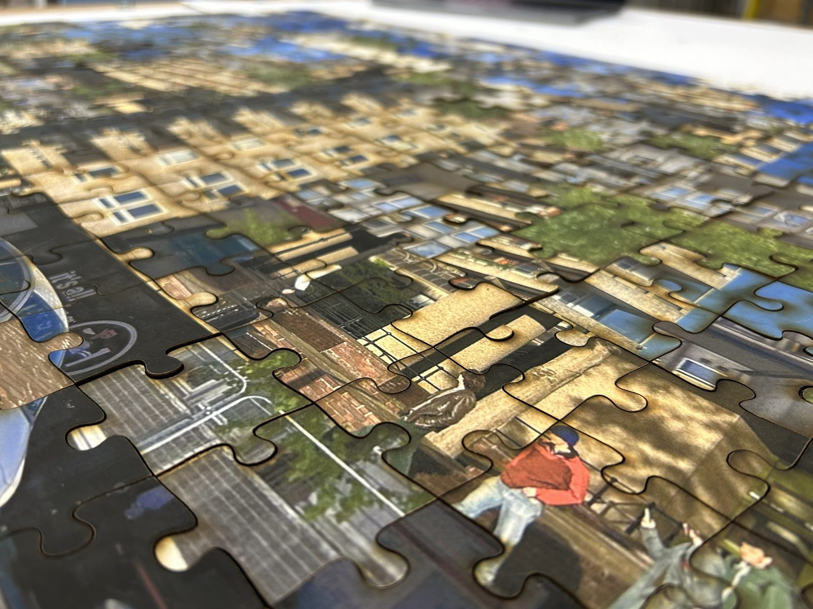
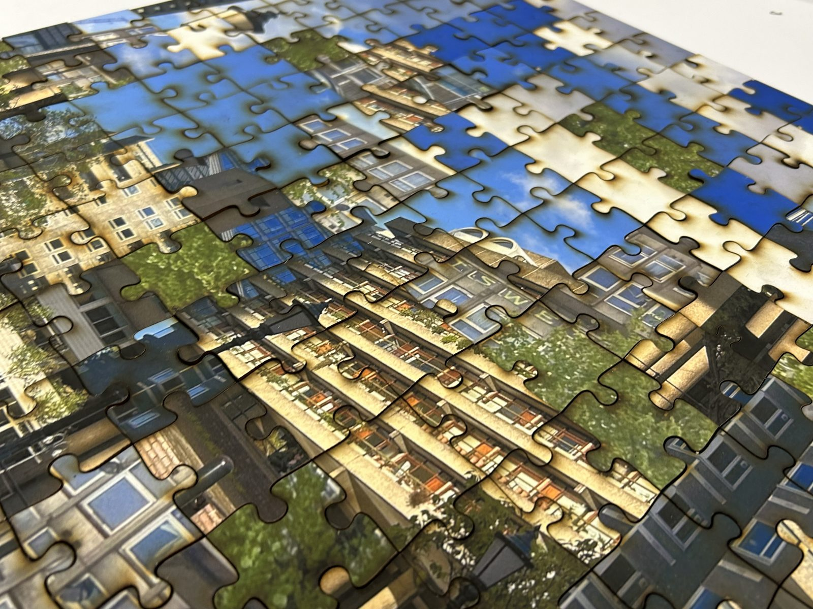

This project originated from a love for the aesthetic of Brutalism. I wanted to take this love for the look of the architecture and take it further into understanding it deeper. Within this project I strived to understand the discrepancies between the aesthetic and the philosophical of Brutalism. My main question being 'Why didn't it work?' Through my project I want to show some of the reasons for Brutalism not working. My final outcome is multiple jigsaws. These jigsaws show both success and failure stories of Brutalism and a clear image of Brutalist architecture. The point of these jigsaws are almost a learning activity, they are designed so that there is no actually correct way for them to be built with each jigsaw being able to be intertwined with the others. All of the jigsaws metaphorically fit together as they all fit under the same utopian idea for the future and how living should be redesigned. They still fit under the same categories even though some worked better than others.
From my research I have come to the point of trying to understand what my beliefs for the failure of Brutalism were. In my opinion there were multiple reasons for the failure. However most of these problems stem from a place of social class. Brutalism success, like the Barbican, are more middle class settlements, this means due to the higher rent there is more money going into them. Another big reason for the failure is an overall lack of money for the building, meaning it was done cheaply and with no care. People were more worried about the speed in which the buildings were built than the quality. However the want for speed is understandable after the War. Finally a problem for these developments were the architects, these buildings were the babies of a lot of the architects doing them, their first and last dabble into Brutalism. This caused them to become too selfish towards the projects in some resects.
This jigsaw is designed as a jigsaw that should be done as a group, it is not only a jigsaw but an activity that communities should use as a way in which they can come together and discuss. With this jigsaw I want you to feel free to express how you feel and how Brutalism as a philosophy might have impacted your lives and way of living. This jigsaw has one simple rule for the makers and that is to try to never complete the jigsaw as one of the images within the box.


